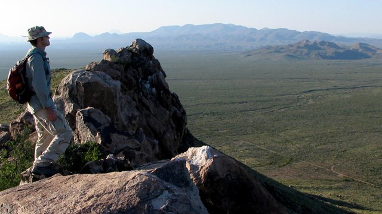
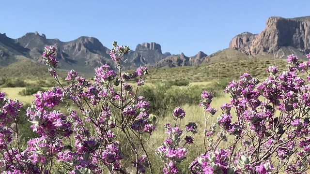
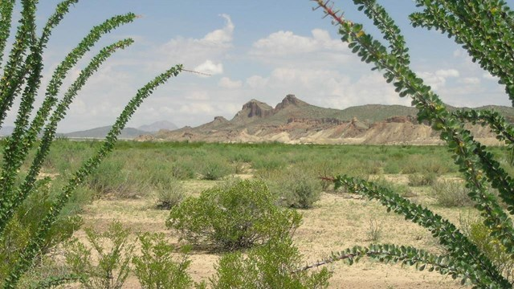
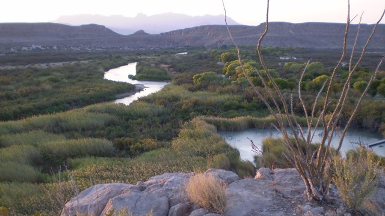
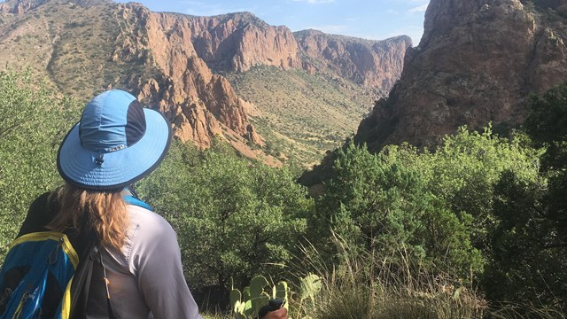
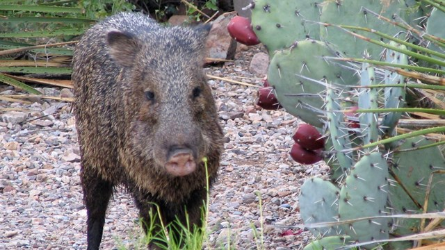
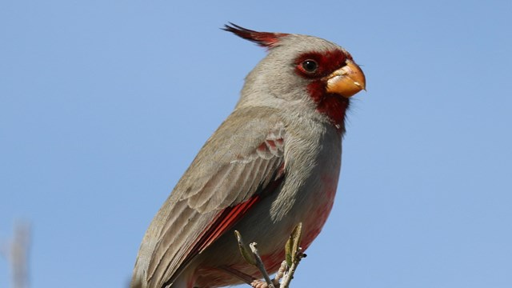
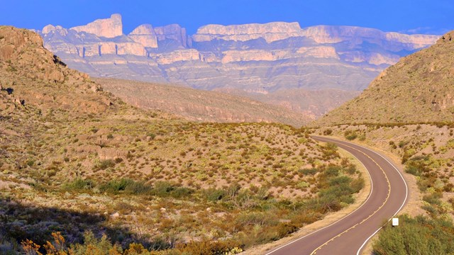
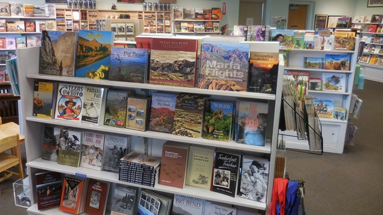

Splendid Isolation: Big Bend
There is a place in Far West Texas where night skies are dark as coal and rivers carve temple-like canyons in ancient limestone. Here, at the end of the road, hundreds of bird species take refuge in a solitary mountain range surrounded by weather-beaten desert. Tenacious cactus bloom in sublime southwestern sun, and species diversity is the best in the country. This magical place is Big Bend...

Outdoor adventure, wide open spaces, camping, hiking, scenic drives. Where to begin?

Nature, History, Plants, Geology, Fossils, Birds, and more! What's So Special About Big Bend?

Be prepared for summer in the desert. Remote, beautiful, and HOT.

Current weather, river levels, webcam view, visibility, and air quality readings.

Big Bend has lots to explore! Use these suggested itineraries to help get the most out of your visit.

There are four developed campgrounds in Big Bend National Park, and primitive backcountry camping too.

Big Bend is a hiker's paradise. More than 150 miles of desert and mountains trails to explore!

Delve into the park's flora and fauna, geology, ecosystems, and other natural features.

Big Bend is a world-famous location for birds and birdwatching. Learn more about the feathered wonders of Big Bend.

Hit the road and explore the park's gorgeous vistas. Paved highways and dirt roads provide access to an incredible array of experiences.

Prepare for your visit and learn about the park with books, maps, and guides from the Big Bend Natural History Association.